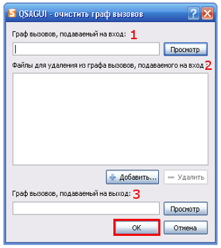

Содержание
Что такое QSAGUI?
Начало
Создание графа вызовов
Соединение графов вызовов
Очистка графа вызовов
Обновление графа вызовов
Получение списков файлов/функций
Показать граф вызовов
Настройки
|
Очистка графа вызовов
Используйте "Граф вызовов" -> "Очистить..." или кнопку "Очистить" на панели инструментов или сочетание клавиш "Ctrl+Shift+C".

1. Выберите граф вызовов для очистки..
2. Добавьте названия исходных файлов, которые будут удалены из списка, используйте кнопки "Добавить..." и "Удалить" для управления элементами.
3. Выберите имя графа вызовов, подаваемого на выход.
Нажмите кнопку "OK" для очистки графа вызовов.
|